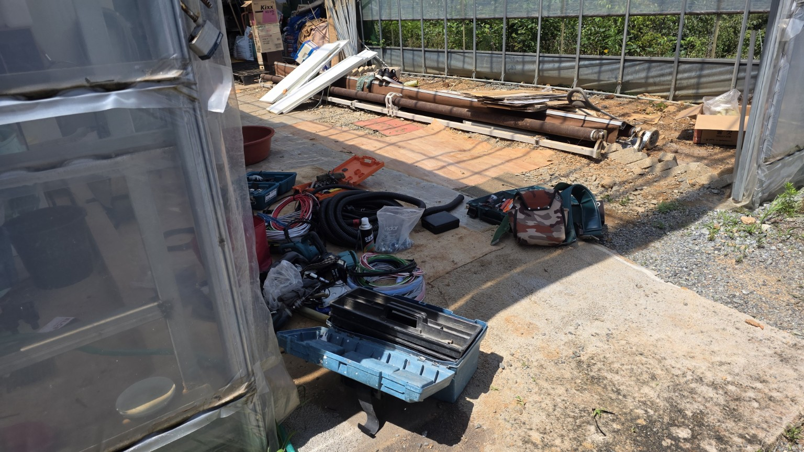
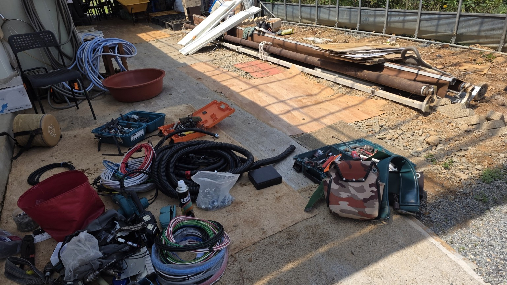
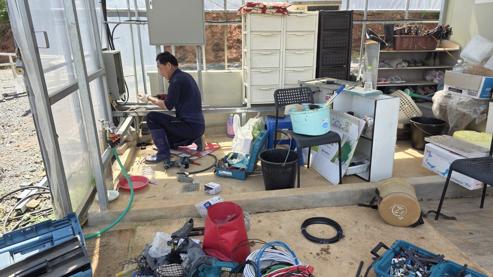
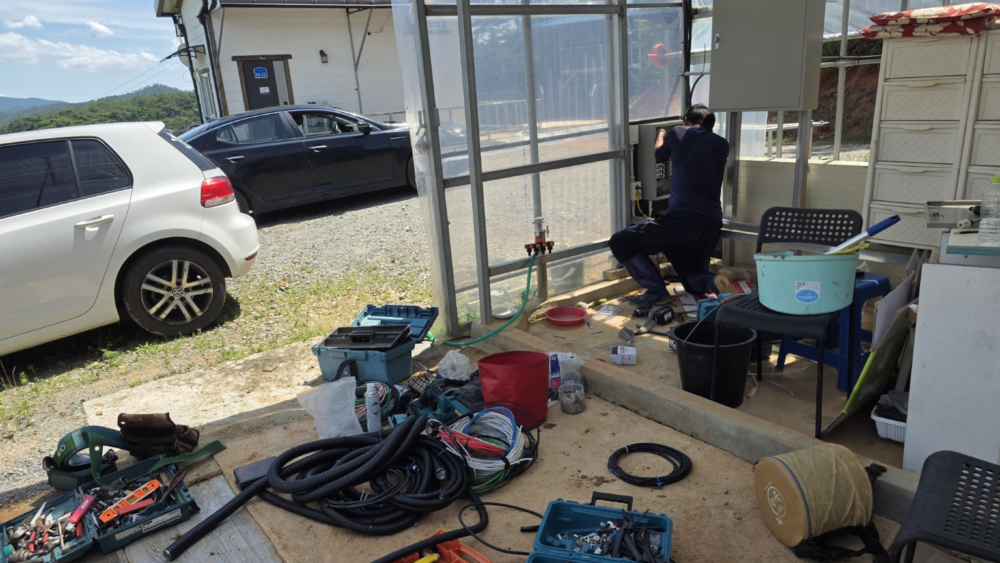
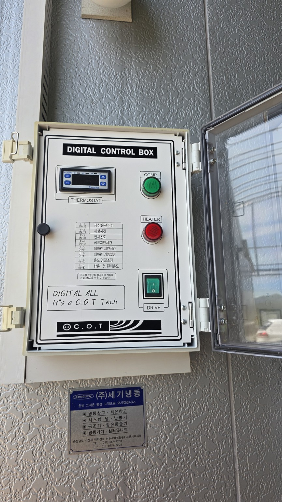
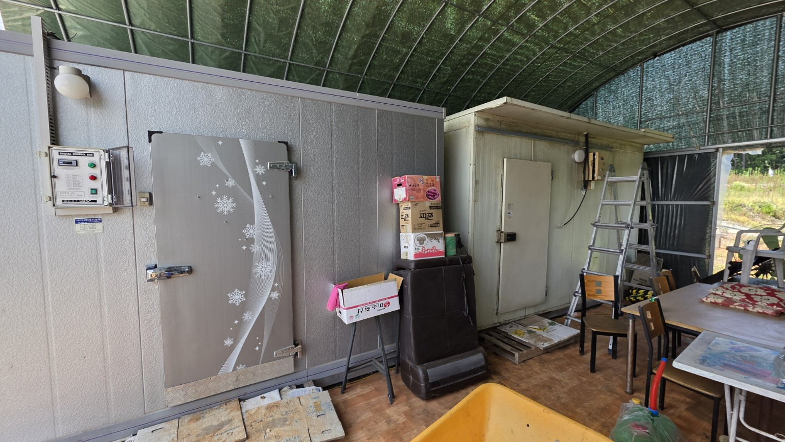
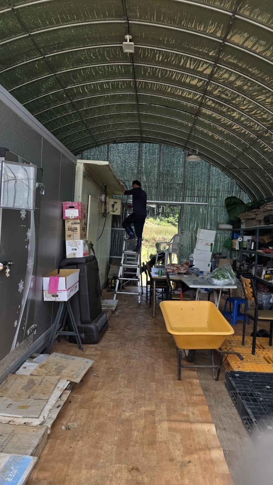
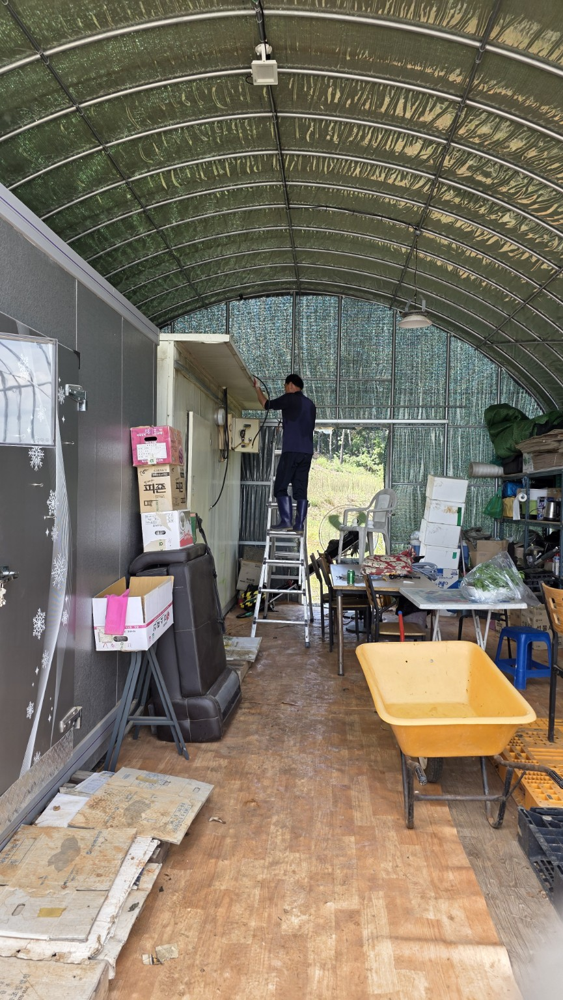
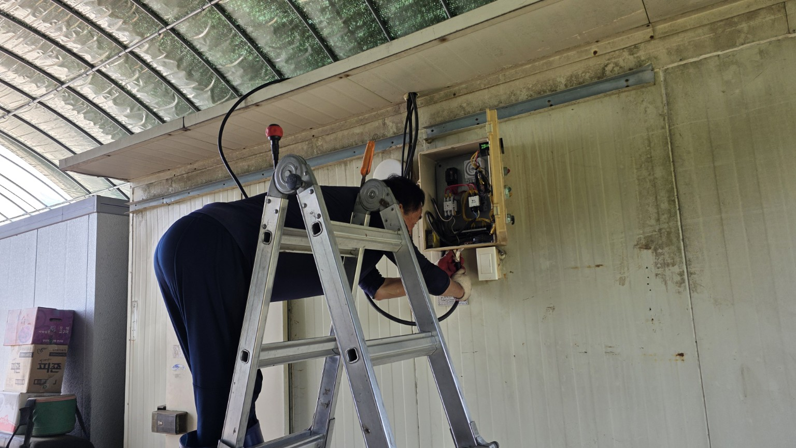
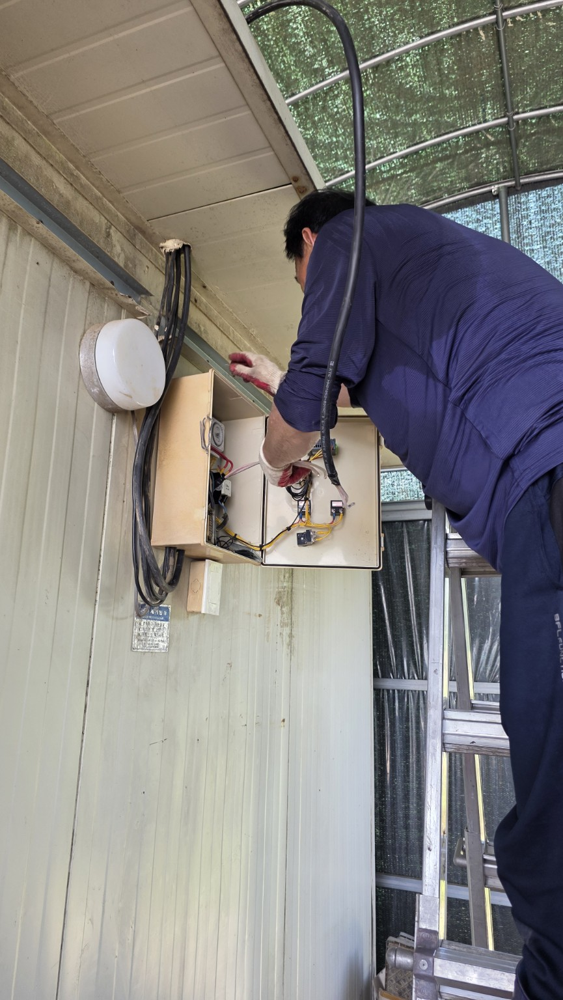

2026-07-11 화곡농장 냉동고 전기 증설 작업 기록
이미지를 누르면 화면 중앙에 크게 표시됩니다.
1. 자재 및 배선 준비

전선·전선관·공구 준비 전경
10SQ 전선과 전선관 및 작업 공구2. 제어반 연결 및 설비 전경

저온창고 제어반 연결 작업
제어반 작업 위치와 주변 전경
냉동고 디지털 컨트롤박스
냉동고와 저온창고 설치 전경3. 상부 배선 및 제어함 내부 작업

저온창고 상부 케이블 배선 작업
상부 배선 작업 정면
전기함 및 차단기 배선 작업
제어함 내부 배선 정리 및 연결